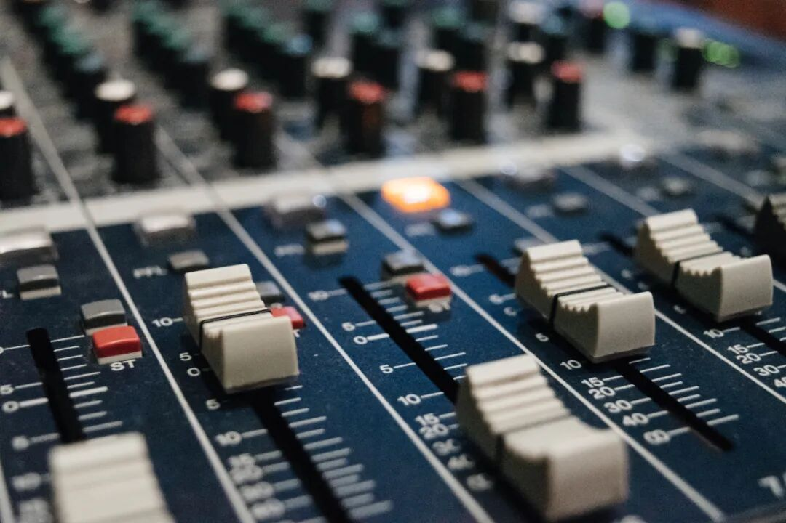
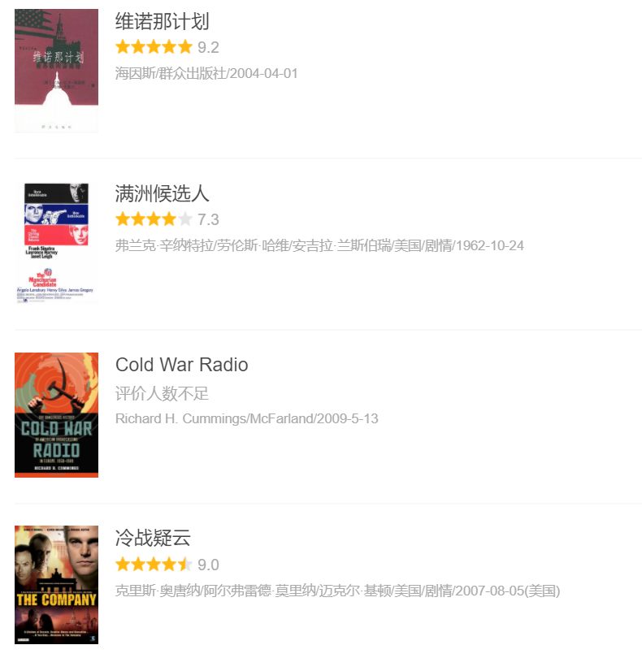

谍海轶闻｜广播攻势与舆论渗透：冷战中的宣传战
点击蓝字关注「忽左忽右」


广播攻势与舆论渗透：冷战中的宣传战
以下是本期内容节选，预计阅读12分钟
美国如何应对苏联的宣传攻势
沙青青
古琴科事件（点击查看谍海轶闻古琴科事件特别节目），是美国肃清内部苏联间谍和对苏联开启宣传反击的开端。对当时的美国来说，面临着一个很大的问题：怎样扭转国内的气氛。
在1945年战争刚刚结束的时候，其实美国国内民众对苏联的好感度还是挺高的，如何在很短的时间内让美国民众意识到“苏联是我们的敌人，或是一个很大的威胁”需要一些重大的公关事件，所以当时古琴科事件之所以被发酵，然后变成一个重大的事件，背后有这一层原因。美国官方就是要刻意地把它拿来，借助古琴科事件渲染苏联的威胁，这也解释了为什么在古琴科事件之后，短短两年之间，好莱坞就拍出了一部同名的电影，而且类似的故事在50年代还被重新翻拍过，就把它作为一个非常好的防谍警示教育。
在此之后，美国政府开始了一系列对内的所谓的肃清工作，主要是从好莱坞、从政府机关、从国会里面把当时受苏联影响的这一批人士揪出来。
这批人中，有一部分人可以被视为真正为苏联服务的情报人员，拿了钱、拿了卢布，但还有一批人完全是出于一种理想主义的信念，他可能在他的青年时代就受过一些社会主义、共产主义文化的熏陶，天然对莫斯科有好感，而且他很多时候会认为：我帮莫斯科做事，不是在背叛美国的国家利益或者是对美国不利。他甚至认为说：我是为了 “Common good”，是为了全人类的意义来做。这种心理还是很强的，所以在当时的社会环境之下，美国方面需要进行一波肃清。
肃清的最高峰就是所谓的麦卡锡主义，美国议员麦卡锡当时提出了一个专门的委员会，来对美国的各行各业，尤其是文化战线进行各种各样的审查，目的无非就是把当时有“亲共思想”的一批人，从美国的各行各业里面揪出来的，然后加以甄别，也就是考验你是不是忠诚的美国人。
这一套东西在当时的美国变成了一个正直的运动，从白宫到国会、到好莱坞，几乎都有涉及，整个规模非常的大。这个运动导致的直接后果就是，美国国内民众对苏联的观感，基本上在短短的一、两年之内发生了比较大的转折，急转直下，从1945年一直到1947年、48年，从二战时候的盟友变成了不共戴天的意识形态敌人，这一套东西非常的有效。
在1945年之前，社会主义思潮或者共产主义思潮，在西方社会有一种天然的政治正确性，从英国到美国、到相关的欧洲国家的主流知识分子，似乎觉得信仰社会主义或者推崇共产主义的某些理念，是一种非常时髦的思潮。他们会觉得你连社会主义的书都没读过，你非常的老土，跟不上趟。
这种概念是非常强的，所以在1945年以后，以美国为首的西方国家就需要去扭转这种思潮，要给共产主义重新抹上一套别的颜色，在此之后，美国方面开始有意识的在宣传战线培养自己针对东欧、针对苏联的一些相关的宣传机构，最典型的例子就是自由欧洲电台。
自由欧洲电台在1949年成立，它的主要目标就是对东欧国家进行广播宣传，同时它还有个针对苏联的自由电台，后来两个平台合并，但却是一前一后成立起来，一个针对东欧，一个针对苏联，这一套东西学了苏联类似塔斯社这样的相关机构。他们说，苏联可以做全方位的宣传，我们也可以做。
在组建过程当中，美国人向英国人学习了很多，因为BBC的历史悠久，而且BBC一开始就做一些对敌宣传工作，相关的对敌广播在二战时期发挥到了最高潮，尤其是在1943年之后，BBC经常会对德战区发表一些混淆视听的广播，欺敌广播，告诉你什么地方缺粮了，什么地方没油了，造成敌方后方的波动，发挥了一些作用。所以美国人也向BBC取经该怎么做。
1949年自由欧洲电台成立，它的总部设在了德国的慕尼黑，慕尼黑这个位置点很关键，它靠近中欧，设在这个点，能够方便它对东欧、苏联广大的腹地进行广播，所以你可以把它视为美国在宣传战线上吹起反攻号角的一个标志性事件。
郑诗亮
帮沙老师稍微再补充一下，一个是前面讲到美国国内对苏联影响的肃清，麦卡锡的一系列操作，比如说建立调查小组，包括他本人的社会活动，确实是掀起了一个高潮，但其实在此之前，美国就已经开始做动作了。
做动作的有两个部门，一个就是著名的FBI，那个时候局长还是胡佛，早在1943年，他就注意到好莱坞被共产主义渗透了，那个时候苏联和美国还是盟友，他们在共同对抗他们的敌人纳粹的时候，胡佛就命令他的手下理查德胡德，FBI洛杉矶分部的主管，让他提交一个报告，来阐明共产主义者是怎么样渗透和控制美国的电影工业的。
他们最后有了一个报告，这个报告目前好像已经解密了，大家有兴趣可以去搜一下，叫“共产主义对电影行业的渗透”。
这个项目到1958年才正式结束，调查了十几年，去搜查好莱坞的美国共产党党员有哪些，成立了哪些共产主义性质的组织，针对这些党员和组织建立起档案，相当于对他们进行长期的跟踪，这是FBI的行动。
还有一个有行动的部门是美国国会，美国国会下面有一个著名的组织“非美活动调查委员会”，他们在1947年的时候召开了一个听证会，胡佛也出席了，而且胡佛首先大力阐释了好莱坞的共产主义势力有多么危险，他描述得很夸张，说好莱坞就是一个共产主义宣传的成熟的基地，里面有大量的煽动者和追随者，如果不进行控制，不进行调整的话，将来会动摇美国的国本。
沙青青
当时胡佛的很多描述，实际上是直接受他在20年代镇压无政府主义者或镇压公运的经验的影响，因为在20年代胡佛刚刚在FBI崭露头角的时候，他的一大功绩就是抓捕、镇压各种各样的无政府主义者和工业分子。
当时也发生过很有名的相关事件，比方说两个意大利的工业领袖被无辜送到电椅上。像类似的事情导致了胡佛在40年代的时候，他很多对共产主义渗透的描述，受他在20年代相关经历的影响，很多言辞确实是非常激烈的。
郑诗亮
对，所以听证会开完之后，后来的史家就描述，这是好莱坞发展的重大转折点，因为这次听证会对好莱坞做了全面的调查，既有个人层面的所谓激进分子，也有组织层面的所谓激进团体，还包括被他们定义为“有颠覆性内容，针对美国的体制发起挑战，反对资本主义、宣扬共产主义”的电影。
这次听证会之后，整个好莱坞遭到行业大洗牌，各种各样不与“非美活动调查委员会”合作的证人，都会因为所谓“藐视国会罪”被送进监狱。然后，好莱坞开始设置黑名单、拍摄反共电影，并且打压带有进步色彩的电影。具体就不展开了。总之，从此之后，好莱坞就成了美国官方构建的冷战体系当中非常重要的宣传工具。我们今天看到的各种各样的著名的反共电影，就这样被源不断地生产出来，配合美国针对苏东阵营的宣传作战。
自由欧洲电台
郑诗亮
顺着前面的往下聊，沙老师提到自由欧洲电台，这确实是我们今天这一期节目的重点。可以说五六十年代发生在苏东阵容的国际风云事件，多少都与自由欧洲电台相关。发生在波兰的波兹南事件和之后的匈牙利事件，包括再之后捷克斯洛伐克的布拉格之春，都有关联。
其实，自由欧洲电台一开始与美国之音是不同的，最大的不同在哪里呢？它标榜自己是一个私人的、非官方的电台。它也确实有一个私人组织来帮它筹款，这个组织叫“自由十字军”。但是我查了相关的数据，整个50年代，差不多为期10年左右，自由十字军组织每年帮自由欧洲电台筹款差不多是225万到330万美元，看起来好像很多，但其实只占自由欧洲电台全部运作经费的19%，剩下的钱还是中央情报局来出的。数据是不会骗人的，自由欧洲电台的性质也就一目了然了。
沙青青
美国之音百分百是拿美国钱的美国国营电台，自由欧洲电台可以理解为是官督商办的电台。
郑诗亮
但它这个私人的、非官方的表面身份还是蛮重要的，因为可以很方便地利用这个身份开展活动，这就好比周总理那句名言，“你留在党外，可以起到党内起不到的作用”。它的作用就一条：不断地通过广播向所谓“铁幕”背后的民众宣扬西方的价值观念和生活方式，来揭穿西方阵营眼中苏东阵营的谣言。
这个电台在后续两大阵营的各种交锋当中，起到了非常重要的作用。沙老师可以介绍一下，因为他最近在苦读一本英文专著，其中对这个情况做了大量介绍。
沙青青
书名叫《Cold War Radio》，它讲了整个自由欧洲电台的发展史，书的作者长期在自由欧洲电台供职，而且担任过一些相关的领导职位。
书的故事里面讲了很多，当时自由欧洲电台发挥了多少作用，因为自由欧洲电台也吸取了东方阵营的先进经验，广纳各式各样的语言人才，尤其是来自于苏东地区的一些语言人才，他们很多是逃亡出来的，所以它接到了很多从苏东来的所谓异见人士、流亡者，而且非常有针对性的开设了各种各样的语种，除了苏东地区的主流语种之外，波兰语、捷克语、俄语，甚至还针对苏联加盟共和国有针对性的服务，比如有阿塞拜疆语，这种相关的小语种的渗透做得非常好。
这个工作实际上也卓有成效。在50年代初，很长一段时间里，在苏东地区实际收听过自由欧洲电台的人数非常的高，而且也很快引起了莫斯科方面的注意，因为据《Cold War Radio》作者的说法，在50年代初的时候，KGB就曾经策划过对相关语种的主播的一些政治上的暗杀或者清除行动。
他印象很深，在50年代初的时候，当时的KGB就对他们的阿塞拜疆语的主播实施过所谓的暗杀。
郑诗亮
他们知道这方面的人才比较少，杀一个少一个。
沙青青
类似的事情在1950年的时候有发生，但反过来也可以印证当时的莫斯科或者苏东地区对电台的宣传战能力还是非常忌惮的，在波匈事件当中，它发挥了多大的作用，其实也是显而易见的。
郑诗亮
主要是美国确实非常重视自由欧洲电台。我可以跟大家介绍一下重视程度有多高。
首先，它由美国最大的“民间”反共组织“自由欧洲委员会”建立。
自由欧洲委员会的配置有多高？这么说吧，我们今天耳熟能详的许多知名的美国政治家和学者都做过它的主席。我举几个例子。艾伦·杜勒斯，他是历史上任期最长的中央情报局局长；阿瑟·施莱辛格，他是著名的美国史专家；约瑟夫·格鲁，他曾经做过美国驻日大使，沙老师还翻译过格鲁驻日时期的日记《使日十年》；还有克莱将军，他是美国驻西德占领军司令。可以说，自由欧州委员会汇聚了美国在政、军、学各方面的高端人才。
其次，它得到了美国国务院的承认和支持，比如，1949年的6月29号，当时杜鲁门政府的国务卿是艾奇逊，他就公开在新闻发布会上表示，他支持自由欧洲委员会。后来担任艾森豪威尔政府国务卿的约翰·杜勒斯也亲口承认，自由欧洲委员会其实就是中央情报局的外围组织。这是他邀请阿瑟·施莱辛格来担任“自由欧洲电台执行委员会”委员的时候提到的。
最后就是经费问题。自由欧洲电台的钱，大部分是中央情报局出的。中央情报局的操作很讲究，它把提供给自由欧洲电台的经费存入各个在美国以私人名义建立的基金会，比如洛克菲勒基金会、福特基金会，然后再让基金会捐款给自由欧洲电台。
罗斯福总统的夫人就回忆说，自由欧洲电台在福特基金会有一个特别的基金，专门为它设置的，相当于专款专用。中央情报局还会负责整个自由欧洲电台的政策制定、人事安排，以及节目审查，全方位囊括了自由欧洲电台工作的方方面面。整个自由欧洲电台的广播宣传的战略方向是由中央情报局和美国国务院来共同制定的。
所以，前面才会讲，虽然自由欧洲电台表面上是非官方的、民间的，其实它的每一个活动都处在中央情报局的掌控之下。
本期嘉宾
沙青青，上海图书馆历史文献中心副主任
郑诗亮，《上海书评》执行主编
本期提到
温斯頓·伦纳德 / 安德烈·亚历山德罗维奇·日丹诺夫 / 米哈伊尔·安德烈耶维奇·苏斯洛夫 / 伊格尔·谢尔盖耶维奇·古琴科 / 约瑟夫·雷蒙德·“乔”·麦卡锡 / 约翰·埃德加·胡佛 / 德怀特·大卫·艾森豪威尔 / 伊万·亚历山德罗维奇·谢罗夫 / 詹姆斯·C·斯科特 / 艾伦·威尔许·杜勒斯
阿瑟·施莱辛格 / 约翰·福斯特·杜勒斯 / 约瑟夫·克拉克·格鲁 / 迪安·古德哈姆·艾奇逊 / 约瑟夫·斯大林 / 尼基塔·谢尔盖耶维奇·赫鲁晓夫 / 列昂尼德·伊里奇·勃列日涅夫 / 尤里·弗拉基米罗维奇·安德罗波夫 / 乔治·伊万诺夫·马可夫 / 理查德·米尔豪斯·尼克松 / 亨利·阿尔弗雷德·基辛格
沈志华 / 张爱玲

*点击文末
“
阅读原文
”
查看本期豆列
|||END|||
*** 节目后期：hotair | 制作总监：王若弛文字整理、排版：Knight资料延伸：禾放

苹果播客 | Spotify | 小宇宙App | 网易云音乐喜马拉雅 | 蜻蜓 FM | 荔枝 FM央广云听 | 芒果动听 | 阿基米德 | 三联中读搜索『忽左忽右』订阅收听